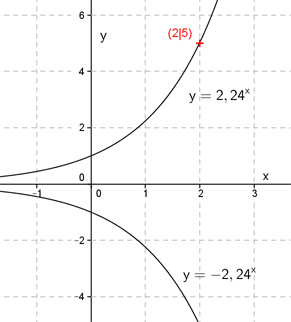

Aufgabe 16 Wie lautet die Funktionsgleichung einer Funktion der Form y = ax, wenn sie durch den Punkt (2|5) geht? y = ax x = 2 , y = 5 eingesetzt : 5 = a2 |√ a = ± 2,24 y = 2,24x oder y = -2,24x Punktprobe : 5 = 2,242 = 5 Stimmt. Der Punkt liegt auf diesem Graphen. 5 = -2,242 = -5 Der Punkt liegt nicht auf diesem Graphen. Einzige Lösung: y = 2,24x 